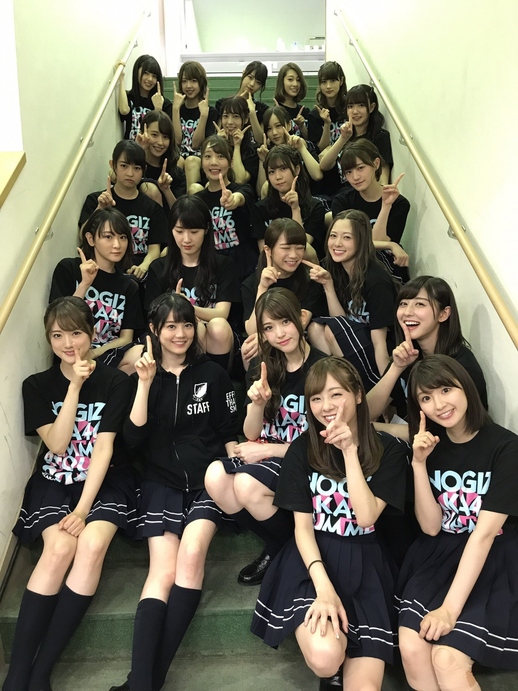

| 2017/07 09 Sun | 生駒里奈 くせっ毛が再発した。湿気で。 |
生駒です(*´꒳`*)
下半期始まりました。
暑いですね毎日毎日。
クーラーは身体に悪いからつけたくないけど、ついにつけました。
でも嬉しい事にね、身体に優しいモードっちゅーのがあった！！
程よく冷えていい感じ！！
まずは、
乃木坂46真夏の全国ツアー2017
今年は明治神宮球場からスタートしました(*´꒳`*)
私にとっては10月までライブないので、一旦ライブ納めの気持ちでいました。
初の期生ごとのライブ
三期生かわいいなぁ
ほんと、イメージは親戚の赤ちゃんが初めて寝返りうったみたいな感じ笑
私はプリンシパルも、三期生ライブも観に行けなくて(´；ω；｀)
埼玉スーパーアリーナも直接ライブを見れなくて、（見れたとしても袖見切りギリギリから）今回が大きい箱で見る初めてのライブでした(*´꒳`*)
この子達が乃木坂の未来を作るんだな、
と言うか作って欲しい！！(*´꒳`*)
可愛さはダントツよ！！
三期生は、先輩よりも早い段階から色んな人に囲まれ注目され、
ある意味、失敗が出来ない様な環境にいると思います。
だから早いスピードで気持ちも技術も成長させていかないといけないのはすごく大変なんだろうなと
三期生を尊敬しています。
だからこそ、自分にストイックに進んでいってほしい。
私には見守る事しか出来ないけど、
みんな可愛くて仕方がないからさ(*´꒳`*)
先輩と共に頑張ろうね！！
2期生ちゃん
流石でした！！
かっこいいよ！！
出てきた瞬間一期生でかっこいいー！！って超盛り上がった(*´꒳`*)
2期生ちゃんはね、もはや同士だから
2期と共に乃木坂を作って来たんだもん。
私達一期生もまだまだ右も左も変わらない時代、
代々木第一体育館で初めてのツアーファイナルを迎えた日、
私は自分でいっぱいいっぱいで、
みんなを見守る事が出来なかった。
今はそんなみんなにすごく助けて貰ってる。
どーしよー(´；ω；｀)できないよー(´；ω；｀)
ってダル絡みしても、
よしよし大丈夫よいこちゃんって優しく撫でてくれるみんな(´；ω；｀)
嬉しいです。
そんな存在になってくれてありがとう！！！
そして一期生

みんなの良さ、みんなの輝き、可愛さ、
みんなの努力、辛さ、悲しみ
それぞれに色んな事があった6年間でしたが、
みんなの事を日に日に大切になっていくし、大好きになる。
一期生だけで円陣をした時、
自然と同じ気持ちになったね(*´꒳`*)
だから、
制服のマネキンでステージに出た瞬間。
こんな素晴らしい人間の中にいれることを誇りに思いました。
だからすんごい楽しかったよ(*´꒳`*)
ありがとね☆☆
そして、
設定温度で46人が集結しました。
なんでかニュースに取り上げられましたスピーチ⁈笑は、
あの時ふと思った事を言っただけです。
初期の頃、太陽ノックのセンター期間、
MCで話す訓練したお陰で今ではあんまり喋る事が難しくならない様になりました。
生かされるんですな(*´꒳`*)♪
雨も降らずに、
最高の花火も上がりました！！
いい夏のスタートはきれたんじゃないでしょうか(*´꒳`*)！！
そして、始まってますモマ稽古〜
初日からベテランの皆さんの強さに、
置いてけぼりの絶望感にひたり、
自分の技術のなさに悲しみにくれていましたが、
そんな私を皆さんは暖かく見守ってくださってます(*´꒳`*)
少年社中の加藤良子さん、
なんとモバイル先行で神宮のチケット当てて観に来てくださってました(*´꒳`*)☆☆
知ってくれている人がいるなんて、
なんて安心するんだろう(´；ω；｀)ほろろ
そんなこんなでモマを観に来てくださる皆さんに向けて、
生駒は進化をしようと必死です！！
だからね！！
ツアー欠席な分をね、
ちゃんと返さないとね！！
面白かったで(*´꒳`*)
さ、今日のご飯はなんにしようかな〜
お肉食べたいなお肉☆
筋トレ始めたからパワーつけなきゃ〜
パイレーツオブカリビアン 最後の海賊をみて元気になたよ。
うほほうほほうほほ。
あんなかっこいい海賊がきたら、怖いけど憧れてしまう。♡
ジャックも大好きだけど、
バルボッサのカリスマ性も素敵(*´꒳`*)♡
そしてハリウッド映画のCGの綺麗さといったら、、、
たまらんですな♡
ディズニーシー行けるかなぁ
整理券頑張って並ぶよ〜
連れてってかりんちゃーん！！
あっ(・∀・)あとはFree!みなきゃ(*´꒳`*)♡
ではっ
へばなっ★彡